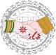
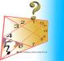

| प्रश्न ज्योतिष | |
|---|---|
 |
विवाह से पूर्व प्रश्न कुण्डली से जानिए भावी दम्पत्ति का स्वभाव (Know the nature of the married couple through Horary astrology)विवाह के बाद पति पत्नी में उनके व्यवहार और स्वभाव को लेकर बात बहुत आगे बढ़ जाती है. प्रश्न कुण्डली से लड़का लड़की का स्वभाव अगर विवाह से पहले ही देख लिया जाए तो विवाह के बाद आने वाली कई परेशानियों से बचाव हो सकता है. |
क्या है प्रश्न ज्योतिष (What is Prashna Astrology)प्रश्न ज्योतिष, ज्योतिष कि वह कला है जिससे आप अपने मन की कार्यसिद्धि को जान सकते है. कोई घटना घटित होगी या नहीं, यह जानने के लिए प्रश्न लग्न देखा जाता है (The prashna lagna is considered to judge the results of a query) |
|
 |
प्रश्न ज्योतिष में संतान योग (Santan Yogas In Prashna Astrology)गृहस्थ जीवन की फुलवारी में बच्चे फूल के समान होते हैं. ज्योतिषशास्त्र के अनुसार जब उचित योग बनता है जब संतान प्राप्ति की संभावनायें अधिक होतीं है |
प्रश्न ज्योतिष से विवाह का विचार - When I will get married - Horary Asrologyविवाह कब होगा इस प्रश्न का विचार करने के लिए द्वितीय, सप्तम, तथा एकादश भाव में कौन से ग्रह हैं इनको देखा जाता है (The second and the seventh house should be assessed for marriage.) |
|
प्रश्न कुण्डली से स्वास्थ्य लाभ (Health Analysis Through Prashna Kundali)सभी व्यक्ति उत्तम स्वास्थ्य की कामना करते है। लेकिन मानव शरीर मशीन के समान है इसलिए समय समय पर स्वास्थ्य सम्बन्धी परेशानियां आती रहती हैं। स्वास्थ्य में जल्दी सुधार नहीं होने पर चिंता होती है। |
|
 |
प्रश्न कुण्डली में पंचम भाव(Fifth house in Prashana kundli)जिस तरह संगीत में पंचम सुर को सबसे मीठा कहा गया है उसी प्रकार ज्योतिषशास्त्री कुण्डली में पंचम भाव को बहुत ही महत्वपूर्ण बताते हैं। वास्तव मे पंचम भाव(Fifth House) हमारे जीवन में काफी महत्वपूर्ण स्थान रखता है। |
प्रश्न कुण्डली से रोग एवं उनके उपचार (Diseases and their remedies from Prashna Kundali)ज्योतिषशास्त्र की दृष्टि से देखा जाए तो जीवन की हर छोटी बड़ी घटना ग्रहों से प्रभावित होती है.स्वास्थ्य सम्बन्धी परेशानियों एवं रोग का कारण भी ग्रह हैं.ज्योतिष की विधा प्रश्न कुण्डली रोग के विषय में क्या कहती है |
|
 |
प्रश्न कुण्डली से जानिए कैसा होगा जीवन साथी (Know about your Life Partner from prashan Kundli)विवाह संस्कार से न केवल स्त्री और पुरूष का मिलन होता है, बल्कि एक नई जिन्दगी का आगाज़ भी होता है। वैवाहिक जीवन की सफलता के लिए आवश्यक है कि आपका जीवनसाथी आपके अनुकूल हो। अगर आप जानना चाहते हैं कि आपका जीवन साथी कैसा होगा तो प्रश्न कुण्डली से आपको इसका उत्तर मिल सकता है। |